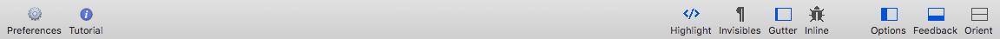

Work with Syntax Highlighting
Balthisar Tidy for Work has a very configurable display. To toggle syntax highlighting on and off, follow the steps below.
-
Select Syntax Highlighting from the Source Code submenu of the View menu.

-
You can also easily toggle the orientation using the Highlight button on the document window’s toolbar. 
Discussion
What is syntax highlighting?
Syntax highlighting makes it much easier to understand the source code that you are editing as well as the Tidy’d code that Balthisar Tidy for Work produces.
It works by identifying the different parts of the source and Tidy’d documents and coloring them according to their function.
Is syntax highlighting part of HTML Tidy now?
No, it’s a function provided exclusively by Balthisar Tidy for Work to help you work better. HTML Tidy’s emphasis is on correcting and pretty-printing source code for use on servers. Balthisar Tidy for Work makes it easier for you to work on that source code before it reaches the server.
How can I change the colors used for highlighting?
Because you’re lucky enough to be a Balthisar Tidy for Work user, you have full control over the colors used for syntax highlighting, as well as other colors that compose the document editor scheme. Have a look at the Colors Preferences panel.
Can I export the syntax colored text to a document for my boss?
From time to time you may have use cases that require showing your Tidy’d code to others. In order to help you help yourself, Balthisar Tidy for Work can export your Tidy’d HTML to RTF. Discover how to do so in this article.